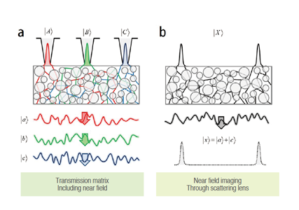
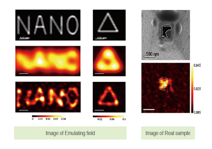
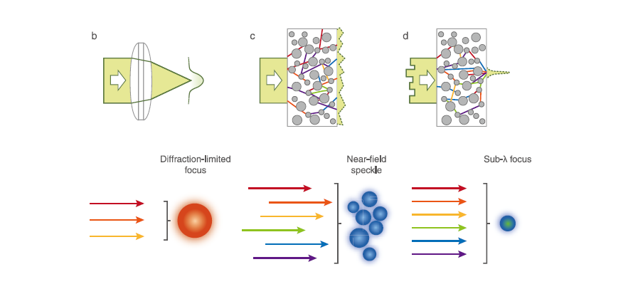

주제별 연구성과
주제별 연구성과
KAIST RESEARCH ACHIEVEMENTS
초고해상도 광초점을 형성하는 산란 수퍼렌즈
물리학과 박용근ㆍ조용훈
요약
본 연구진이 보유한 핵심기술인 'scattering superlens'는 가시광선 대역을 포함한 전자기파 모든 대역의 파장을 가진 광원을 이용하여 근접장을 제어하는 기술이다. 이에 본 연구진은, 나노입자에 의한 근접장을 제어하는 새로운 물리적인 법칙을 사용하여 광리소그래피의 해상도를 획기적으로 높이는 제품을 개발할 계획이다. 이는 기존의 NSOM 시스템과는 달리 일반적인 광학현미경 형태의 장비 구성을 가지기 때문에, 기존 광식각 장비 등에 비해요구공간이 매우 작으며, 상대적으로 뛰어난 경제성을 가지고 있다. 또한 광고분자를 이용하여 복잡한 파면을 기록 및 재생한다면 현재 실험에 사용하고 있는 복잡한 NSOM 시스템을 대체할 수 있는 새로운 근접장 제어 시스템을 제작 할 수 있으며, 이를 광리소그래피에 적용할 계획이다.
연구내용
나노광학 기술은 현대사회의 경제, 기술적 발전의 토대가 된 반도체의 집적도 향상뿐만 아니라 분자 생물학의 태동 이후 질병 정복에 대한 새로운 패러다임에도 필수적인 역할을 하고 있다. 하지만 현재까지 사용되고 있는 초고해상도 광학 기술은 광학 부품 제작이 어려울 뿐 아니라 살아있는 세포에 사용할 수 없는 자외선 영역의 빛을 사용하고 있다. 이는 굴절을 기반으로 하는 기존 광학 기술들로는 빛의 파장에 비례하는 '회절 한계' 이하의 광초점을 만들 수 없기 때문이다.
가시광선 영역에서의 초고해상도 광집적 기술의 중요성으로 인해 최근 다양한 초고해상도 이미징 기술들이 제안되었으나, 이들은 공통적으로 이미지의 후처리를 통한 간접적인 초고해상도 추출 방법(STORM; PALM 기술) 또는 목표 초점 주변형광의 여기를 막는 방법(STED기술)을 사용하고 있기 때문에 실질적으로 초고해상도 광초점을 형성하지 못하고 있다.
 그림 1. Imaging concept of scattering lens with time reversal method
 그림 2. Full-Field Subwavelength Imaging Using a Scattering Superlens
기존 광학 기술들이 회절 한계를 돌파하지 못한 이유는 근접장의 손실때문이다. 본 연구에서는 기존 굴절 기반 렌즈로 제어할 수 없는 근접장을 산란을 통해 직접 제어할 수 있음을 밝혔다. 산란이 일어날 때에는 산란체 주변에 근접장이 생기기 마련이다. 앞서 언급하였듯이 이렇게 생긴 근접장은 얼마 진행하지 못하고 소멸하게 되지만 우리가 사용한 산란이 심한 물질(페인트)의 경우 산란 물질들이 밀집되어 있기 때문에 각각의 근접장들이 산란되어 또다른 근접장을 만들게 된다. 다시 말해, 정보가 소멸되는게 아니라 순차적인 산란을 통해 정보가 변환되어 전달되는 셈이다. 하지만 근접장을 전달한다고 해서 끝나는게 아니라 해당 정보를 의미있게 배치하여야 초점을 만들 수 있다. 이를 광학적으로 말하면 근접장을 포함한 파면의 위상을 알맞게 제어해야 한다는 것이다.
일반적인 산란은 초고해상도 초점은 고사하고 빛의 무작위적인 광경로 분배로 인해 스페클(speckle)을 나타나게 된다. 하지만 이때 입사되는 빛의 파면을 조절 하여 각각의 광경로에 특정한 위상차를 가하게 되면 원하는 지점에 보강간섭을 일으켜 에너지 집적을 이룰 수 있다. 이를 실험적으로 구현하기 위해서 Spatial light modulator라는 장비를 사용하여 입사되는 빛의 파면(위상)을 제어하여 페인트 층을 통과한 후에 나오는 빛의 분포를 조절하였다. 여기서 주목할 점은 Spatial light modulator가 제어할 수 있는 정보는 근접장을 전혀 포함하고 있지 않다는 것이다. 하지만 이때 제어한 정보가 페인트 층을 통해 산란하면서 근접장으로 변환되어 궁극적으로는 근접장을 제어하게 된다. 실험에 사용한 제어 방법은 페인트 반대 면의 임의의 위치의 빛의 세기를 목표로 하여 positive feedback loop을 구현하여 스스로 적합한 파면을 찾는 방식이다. 각각의 위치마다 초점을 형성하기 위한 빛의 파면은 서로 다르기 때문에 이 정보를 모두 얻은 후에는 해당 정보를 이용하여 임의의 위치에 초고해상도 초점을 형성할 수 있다. 본 연구에서는 산란을 통해 발생되는 근접장 또한 입사되는 파면(일반 굴절기반광학 시스템으로 제어 가능한 원거리장 또는 farfield)을 제어함으로써 임의로 조작이 가능함을 선보였다.

그림 3. 산란 슈퍼렌즈의 원리: 근접장을 산란을 통해 전달하여
초고해상도 광초점을 형성한다.
입사되는 빛의 파면을 조절하기 위해 빛의 위상을 임의로 제어할 수 있는 SLM(Spatial Light Modulator)을 사용하였으며, 당 기술을 사용하여 임의의 지점에 초고해상도 광초점을 형성할 수 있음을 입증하였다. 이때 놀랍게도 얇은 페인트 박막과 파면 조절기만을 사용하여 기존의 근접장 현미경(NSOM, nearfield scanning optical microscope)과 견줄 수 있는 해상도와 효율을 얻을 수 있음을 보였다. 이는 기존 학계에서 받아들였던 초고해상도 초점을 형성하기 위해서는 단파장의 빛,또는 굴절률이 높은 매질을 사용해야 한다는 통념을 벗어난 새로운 개념이다. 현재까지 입증된 초고해상도 광초점 형성 방법으로는 메타물질과 NSOM이 있다. 하지만 이들은 공통적으로 제작단가가 비싸고 확장성이 어렵다는 단점을 갖고 있다. 본 연구에서 제안한 광초점 방법은 값싼 락카 페인트와 이에 대응되는 파면에 대한 정보만 알고 있으면 광초점을 쉽게 임의의 위치에 형성할 수 있다. 산란을 이용한 초고해상도 초점을 이용하여 빛의 직접도가 필수적인 리소그래피, 광치료, 광통신등에 직접적인 응용이 가능할 뿐만 아니라 같은 원리를 이용하여 직접적인 초고해상도 이미징 역시 가능하다. 고해상도 이미징을 필요로 하는 광 나노리소그래피, 나노 광합 집게, 초고해상도 바이오 이미징 등의 분야에 직접적으로 응용 가능할 것이라 기대된다.
연구실적
ㆍ언론 보도: [논문 1], [논문 2]에 대하여 각각 10여 회 ·표지 선정: highlighted in Asia Research News(selected as front cover pictu re)
ㆍSPIE newsroom에 내용 소개
ㆍ국제 특허 출원(일본, 미국): METHOD AND APPARATUS FOR MANIPULATING NEAR-FIELD USING SCATTERING CONTROL
ㆍ한국과학기술단체총연합회에서 2013년 10대 과학기술 뉴스로 선정
참고자료
ㆍ[논문1] J. Park†, C. Park, H. Yu, J. Park, S. Han, J. Shin, S .Ko, K. Nam, Y. Cho*, and Y. Park, "Subwavelength light focusni g using random ", Nature Photonics 7, 454(2013) [2013 Impact Factor = 29.958]
ㆍ[논문2] C. Park†, J. Park, C. Rodriguez, H. Yu, J. Park, S. Han, J. Shin, S. Ko, K. Nam, Y. Cho*, and Y. Park, "Full-field dynamic sub-wavelength imaging using a scattering super-lens", Physical Review Letters, 113, 113901(2014) [2013 Impact Factor = 7.728]